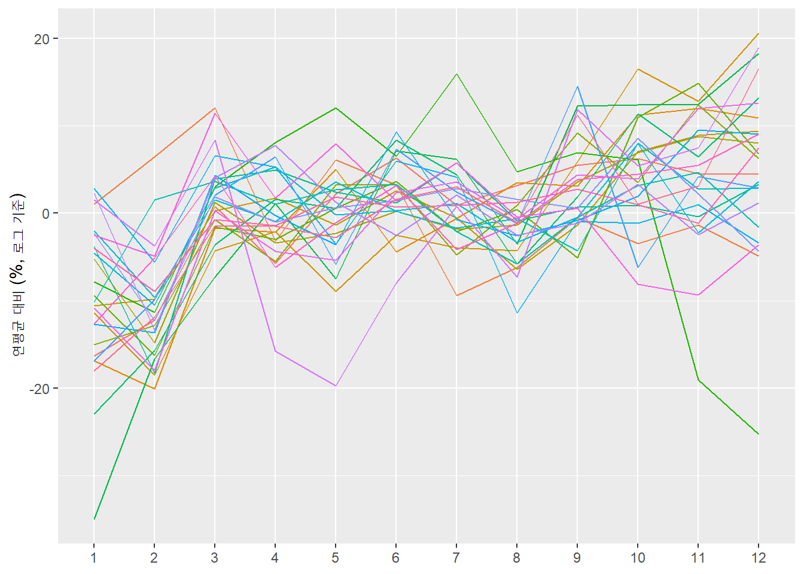
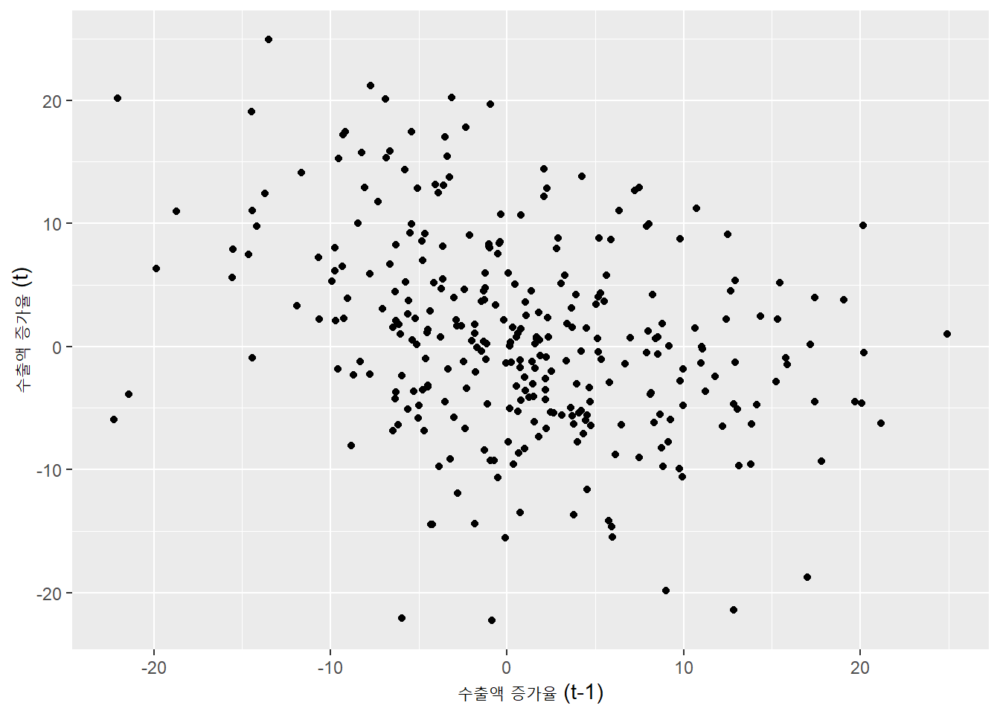
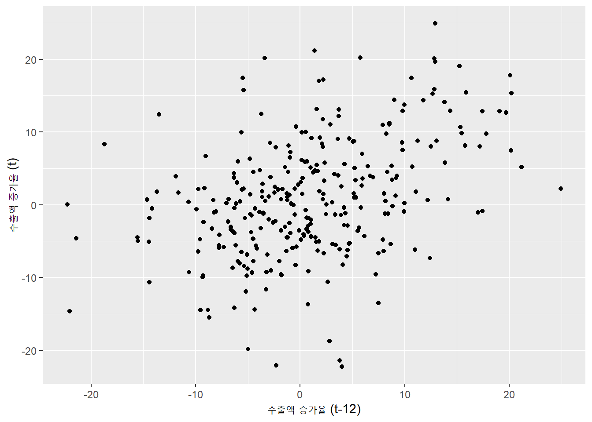
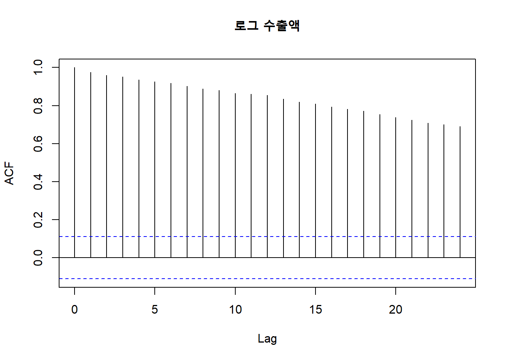
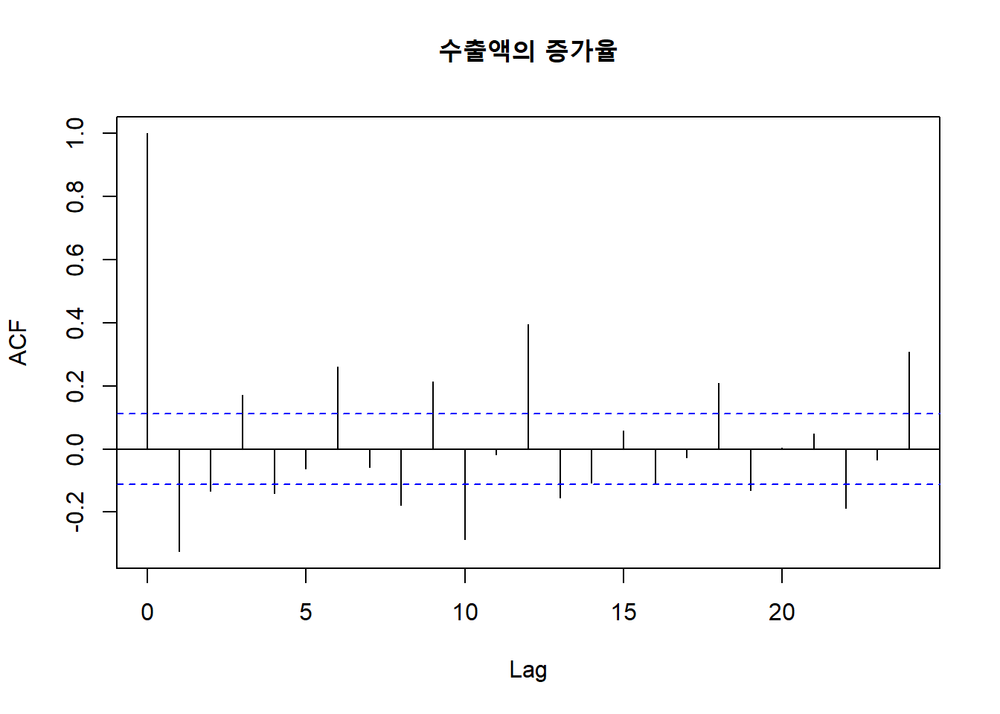

R 스크립트 코드 보기/접기
x <- c(10, 2, 6, 1, 5)
y <- c("apple", "banana", "cranberry", "durian")
z <- c(TRUE, FALSE, TRUE, TRUE)
w <- as.factor(y)
class(x)
class(y)
class(z)
class(w)
length(x)
length(y)c()로 벡터를 생성class()로 확인x <- c(10, 2, 6, 1, 5)
y <- c("apple", "banana", "cranberry", "durian")
z <- c(TRUE, FALSE, TRUE, TRUE)
w <- as.factor(y)
class(x)
class(y)
class(z)
class(w)
length(x)
length(y)[]의 용법
x[x > 5])which(), %in%y[2]
y[c(2, 4)]
y[-3]
y[z]
x[x < 3]
which(y == "banana")
"fig" %in% y$ 이용: 데이터프레임$변수이름df[행, 열]은 벡터 인덱싱을 두 축으로 확장| 하려는 일 | tidyverse | base R |
|---|---|---|
| 한 열 꺼내기 | pull(lifeExp) |
df$lifeExp |
| 새 변수 | mutate(gdp = gdpPercap * pop) |
df$gdp <- df$gdpPercap * df$pop |
| 행 선택 | filter(year == 2007) |
df[df$year == 2007, ] |
| 열 선택 | select(country, lifeExp) |
df[, c("country", "lifeExp")] |
x <- c(15, 18, 3, 10)일 때 x[x > 10]의 결과를 예측하세요.
다음 코드의 결과를 예측하세요.
library(gapminder)
class(gapminder$country)gapminder |>
filter(country == "Korea, Rep.", year >= 2000) |>
select(year, lifeExp)여기서는 한국은행경제통계시스템에서 월별 수출액 통계를 다운받아서 분석함
시계열 자료는 횡단면 자료와 달리 관측 순서가 의미를 가짐
날짜는 보통 문자 (character)로 저장되고 표시 형식이 다양하므로 이를 시간 순서로 배치하고 간격을 쉽게 계산하기 위하여 Date 클래스로 변환하는 것이 유리함
tidyverse의 일부인 lubridate 패키지는 날짜를 다루는 편리한 함수들을 제공| 구분 | 대표 함수 | 역할 / 특징 | 입력 예시 (Input) | 출력 결과 (Output) |
|---|---|---|---|---|
| 날짜 파싱 (Parsing) |
ym() |
연-월 순서의 문자열을 Date 객체로 변환 (1일로 자동 지정) | ym("2026-10") |
"2026-10-01" |
mdy() |
월-일-연 순서의 문자열을 Date 객체로 변환 | mdy("Oct 3, 2026") |
"2026-10-03" |
|
dmy() |
일-월-연 순서의 문자열을 Date 객체로 변환 | dmy("03/10/2026") |
"2026-10-03" |
|
| 요소 추출 (Extraction) |
year() |
Date 객체에서 연도 추출 | year(ymd("2026-10-03")) |
2026 |
quarter() |
Date 객체에서 분기 추출 | quarter(ymd("2026-10-03")) |
4 |
|
month() |
Date 객체에서 월 추출 | month(ymd("2026-10-03")) |
10 |
|
day() |
Date 객체에서 일 추출 | day(ymd("2026-10-03")) |
3 |
df$date의 내용과 클래스가 ym()을 적용하기 이전과 이후 어떻게 달라지는지 확인
library(tidyverse)
library(skimr)
library(janitor)
df <- read_csv("data/수출입 총괄_03074745.csv",
skip = 1,
col_names = c("date", "export"))
df <- df |>
mutate(date = ym(date)) |>
arrange(date)df |>
ggplot(aes(date, export)) +
geom_line() +
labs(title = "월별 수출액 (2000년 1월 ~ 2025년 12월)", x = NULL, y = "수출액 (천불)")
시계열의 종류에 따라 상이한 패턴이 나타남
장기적으로 상승하는 추세가 뚜렷한 수출액과 달리 아래 국고채 3년 만기 금리는 과거보다 낮아지는 경향 위에 국면별로 오르내려 단일한 추세로 요약되지 않음
수출액은 계절성과 조업일수 등의 차이로 월간 변동이 크지만 금리는 상대적으로 월간 변동이 작고 서서히 움직임

추세: 수년에 걸쳐 완만하게 오르거나 내리는 장기적인 방향
순환: 수 년 단위로 오르내리지만 주기의 길이와 폭이 일정하지 않은 변동 (예: 경기순환)
계절성: 매년 같은 시기에 비슷한 방향과 크기로 반복되는 규칙적인 변동
불규칙 변동: 위 세 가지로 설명되지 않는, 예측하기 어려운 나머지 단기 변동
분해의 예

핵심적 아이디어
뚜렷한 추세가 있는 시계열은 수준보다 증가율을 분석하는 것이 더 유용할 수 있음 (요약통계, 구간 비교, 단기 변동 파악 등)
수준이 커질수록 변동 폭도 비례하여 커지면, 로그를 취하는 것이 유리함 (변동 폭이 수준과 무관하게 비슷해짐)
변화가 작을 때, 로그차분은 증가율을 근사함
시차: lag(x)는 한 기간 전 값, lag(x, 12)는 12 기간 전 값
export_l1과 export_l12에 왜 NA가 나타나는지 생각해 볼 것df <- df |>
mutate(export_l1 = lag(export), # 1개월 전 값
export_l12 = lag(export, 12)) # 12개월 전 값
head(df, 14) # A tibble: 14 × 4
date export export_l1 export_l12
<date> <dbl> <dbl> <dbl>
1 2000-01-01 12162425 NA NA
2 2000-02-01 12676042 12162425 NA
3 2000-03-01 14429703 12676042 NA
4 2000-04-01 13522040 14429703 NA
5 2000-05-01 14636755 13522040 NA
6 2000-06-01 15250940 14636755 NA
7 2000-07-01 14455656 15250940 NA
8 2000-08-01 14786880 14455656 NA
9 2000-09-01 15133379 14786880 NA
10 2000-10-01 15248068 15133379 NA
11 2000-11-01 14989068 15248068 NA
12 2000-12-01 14976555 14989068 NA
13 2001-01-01 12644929 14976555 12162425
14 2001-02-01 13354074 12644929 12676042df <- df |>
mutate(gr_exp = (export / lag(export) - 1) * 100)
df |>
ggplot(aes(date, gr_exp)) +
geom_line() +
labs(title = "월별 수출액 증가율", x = NULL, y = "증가율(%)")
로그와 로그차분
증가율이 작을 때 로그차분은 증가율과 거의 비슷함
로그차분은 계산과 모형 분석을 편리하게 하는 장점이 있어 자주 사용됨
df <- df |>
mutate(log_export = log(export),
dlog = (log_export - lag(log_export)) * 100)
df |>
ggplot(aes(date, dlog)) +
geom_line() +
labs(title = "월별 수출액 로그차분", x = NULL, y = "로그변화율(%)")
편의상 전체 기간을 위기전(2000~2007), 금융위기(2008~2009), 위기후(2010~2019), 코로나이후(2020~2025)의 네 구간으로 나누어 보았음
수출액 증가율의 구간별 평균
전체 기간을 하나의 평균과 표준편차로 요약하면 구간별 차이가 가려짐
평균 증가율은 2000~2007년에 가장 높았음
변동성은 금융위기 구간에서 크게 나타남
주의: 단순증가율의 구간 평균은 실제 연평균 증가율을 과장할 우려가 있음
df |>
mutate(period = case_when(
date < as.Date("2008-01-01") ~ "1.위기전",
date < as.Date("2010-01-01") ~ "2.금융위기",
date < as.Date("2020-01-01") ~ "3.위기후",
.default = "4.코로나이후"
)) |>
group_by(period) |>
summarise(n = n(), mean = mean(gr_exp, na.rm = TRUE), sd = sd(gr_exp, na.rm = TRUE)) |>
arrange(period)# A tibble: 4 × 4
period n mean sd
<chr> <int> <dbl> <dbl>
1 1.위기전 96 1.30 7.05
2 2.금융위기 24 0.971 11.1
3 3.위기후 120 0.517 8.08
4 4.코로나이후 72 0.929 8.34계절성: 매년 같은 시기에 비슷한 방향과 크기로 반복되는 규칙적인 변동
계절 그림 (seasonal plot)
df |>
mutate(year = year(date), month = month(date, label = TRUE)) |>
# filter(year >= max(year) - 9) |> # 최근 10년 (2016~2025)
group_by(year) |>
mutate(dev = (log(export) - mean(log(export))) * 100) |>
ggplot(aes(month, dev, group = year, color = factor(year))) +
geom_line() +
labs(x = NULL, y = "연평균 대비 (%, 로그 기준)") +
theme(legend.position = "none") 
자기상관: 시계열의 현재 값과 과거 값 사이의 상관관계
시차 그림 (lag plot):
시계열의 현재 값과 과거 값을 산점도로 표현
직전 달의 수출액 증가율이 평균보다 높았으면 이번 달의 수출액 증가율이 평균보다 낮아지는 경향
df |>
ggplot(aes(x = lag(gr_exp), y = gr_exp)) +
geom_point() +
labs(x = "수출액 증가율 (t-1)", y = "수출액 증가율 (t)") 
df |>
ggplot(aes(x = lag(gr_exp, 12), y = gr_exp)) +
geom_point() +
labs(x = "수출액 증가율 (t-12)", y = "수출액 증가율 (t)") 
자기상관함수(Autocorrelation function): 시차별 자기상관을 모은 그림
시차가 늘어나면서 자기상관의 변화를 보여줌
자기상관함수는 시계열의 지속성과 밀접한 관계를 가짐
점선은 0과 구분되기 어려운 범위를 나타냄
추세가 뚜렷한 시계열(수준)의 자기상관은 시차가 늘어나도 천천히 감소 (시차 1: 0.97, 시차 24: 0.69)
acf(df$log_export, na.action = na.pass, lag.max = 24, main = "로그 수출액")
증가율(로그차분)으로 변환하면 추세에서 오는 지속성은 사라짐
시차 1은 음의 값(-0.32)이고, 이후 0 주위에서 오르내림
시차 12, 24에서 다시 양의 값(0.38, 0.30)이 나타남: 계절성의 흔적
acf(df$gr_exp, na.action = na.pass, lag.max = 24, main = "수출액의 증가율")
1. 위의 월별 수출액 시계열 자료를 이용하여 아래 문제에 답변하시오.
2021년 4월의 전년동월대비 수출 증가율은 41.2%로 매우 높은 반면 전월대비 수출 증가율은 -4.6%에 그쳤다. 어떤 이유로 이러한 결과가 나타났는지 설명하시오.
전체 기간에 걸쳐 수출액의 평균은 385억 달러, 표준편차는 146억 달러인데, 이는 어떤 시기의 수출액을 대표하는지 설명하시오.
자료에 포함되지는 않았으나 2026년 5월의 전월대비 수출액 증가율은 2.1%, 6월은 16.4%였다. 2026년 7월의 전월대비 증가율은 6월보다 높아졌을지 낮아졌을지 예측하고, 근거를 제시하시오. 답변할 때 다음 질문을 참고하시오.
2. 아래 국고채 3년 만기 금리 (월평균) 데이터를 이용하여 아래 질문에 답변하시오.
시계열 그래프를 그린 후 위에서 제시한 수출액의 시계열 그래프와 비교하여 유사한 점과 다른 점을 설명하시오.
이 시계열은 증가율을 구하는 대신 수준 자체를 분석한다면 그 이유가 무엇일지 설명해 보시오.
계절 그림을 그리고 계절성이 존재하는지 확인하시오.
자기상관함수를 구하고 그 패턴을 설명하시오.
3. 한국은행경제통계시스템에서 일별 KOSPI 지수 데이터를 이용하여 아래 질문에 답변하시오.
데이터는 1. 통화/금융 > 1.5. 주식/채권/재정 > 1.5.1. 주식거래/주가지수 > 1.5.1.1. 주식시장(일)에서 다운로드할 수 있음
데이터에는 주말과 공휴일을 제외한 영업일만을 포함하고 있으므로 lag()는 전영업일을 의미함을 참고할 것
KOSPI 지수의 시계열 그래프를 구하고 주요한 특징을 설명하시오.
KOSPI 지수의 단순수익률과 로그차분을 구하고 두 지표가 얼마나 차이가 나는지에 관하여 설명하시오.
아래 문제 c~e에서 KOSPI 지수의 수익률은 로그차분을 이용한 값을 이용하시오.
KOSPI 지수 수익률의 시계열 그래프를 그리고 주요한 특징을 설명하시오.
KOSPI 지수 수익률의 자기상관함수를 구하고 주요한 특징을 설명하시오.
KOSPI 지수 수익률의 절대값을 나타내는 새로운 변수를 만들고 자기상관함수를 구하시오. d에서 KOPSI 지수 수익률의 자기상관함수를 구한 결과와 비교하여 주요한 특징을 설명하시오.